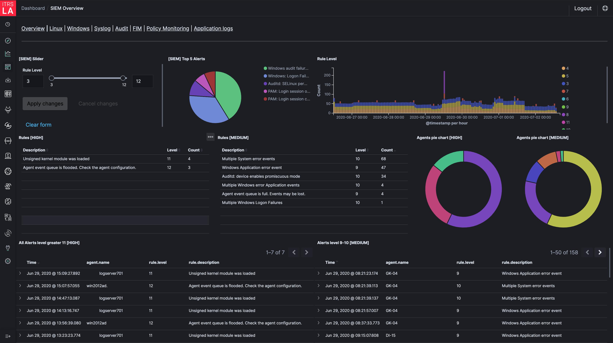
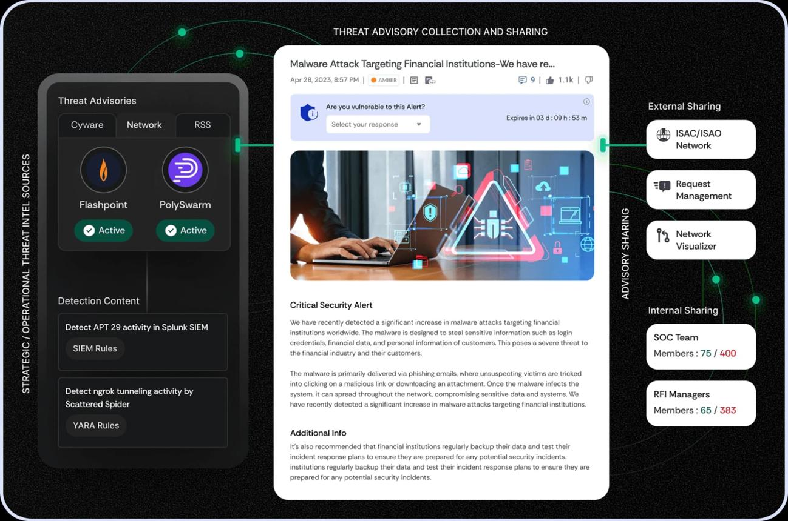
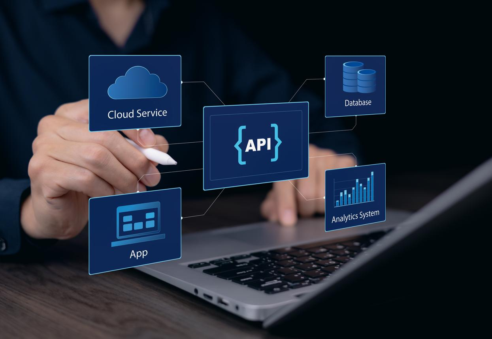

DeskSentinel AI is the UK's AI-driven Identity Governance & Social Engineering Defence Platform transforming vulnerable IT service desks into proactive identity fortresses that intercept vishing, MFA bypass, and account takeover attempts before they breach your organisation.
80%+ of UK businesses have adopted Zero Trust, yet remain vulnerable because threat actors using vishing and MFA bypass tactics like the Scattered Spider group manipulate helpdesk agents into authorising unauthorised identity changes. DeskSentinel AI is the pre-fulfilment governance layer that eliminates this critical gap.
DeskSentinel AI combines pre-fulfilment risk scoring, AI clarification of coercive chat, automated refusal summary intent generation, verification-state compliance graphing, and federated threat benchmarking all in one unified SaaS platform built specifically for UK SMEs, MSPs, and professional service firms.
Leverages ML to fingerprint behavioural baselines of normal user requests, scoring live interactions for social-engineering indicators urgency tone, executive impersonation, MFA fatigue before sensitive actions are permitted.
Automatically detects the true intent behind coercive or manipulative requests translating unstructured helpdesk chat into real-time operational risk conditions with actionable, auto-generated refusal summaries for agents.
Continuously evaluates whether sufficient verified evidence exists to safely authorise the requested identity change identifying exactly where a workflow breaks down before sensitive actions are executed.

Generates audit-ready reports connecting DeskSentinel AI interventions to prevented financial loss and mitigated breach risks ensuring full ICO, NCSC Zero Trust, and UK GDPR compliance with forensic precision.

Federated learning architecture enabling sharing of anonymised manipulation indicators across UK firms so every SME benefits from collective regional threat intelligence without exposing private corporate data.

Plug-and-play API platform built to overlay dominant UK business tools ServiceNow, Jira Service Management, Microsoft Entra ID, Okta minimising onboarding friction without vendor lock-in.
Our models predict the failure risk of a workflow before the sensitive action is executed not just recording it in a SIEM log after the breach. Pre-fulfilment governance stops attacks before they succeed.
Models trained on British IT service sector data, MSP professional standards, NCSC Zero Trust guidelines, and UK corporate communication habits hyper-localised for the British professional market.
Capture expert-level security workflows as permanent organisational assets so procedural compliance stays within the firm even after senior staff leave, and junior agents enforce expert-level rules instantly.
Tiered SaaS pricing from just £90/month gives UK SMEs the same identity governance intelligence previously reserved for enterprise-level SOC teams with multi-million pound security budgets.
Sits as a governance overlay above existing tools ServiceNow, Jira, Okta, Entra ID no infrastructure replacement needed. Deep API integration means adoption in hours, not months.
Audit-ready ICO and NCSC compliance reporting is generated automatically democratising Procedural Equity across the UK service sector and reducing the carbon overhead of manual verification cycles.
DeskSentinel AI is an AI-based end-to-end Identity Governance and Social Engineering Defence Platform for the UK professional services industry. We solve an urgent operational problem the "Service-Desk Attack Surface" where teams are experimenting with digital transformation but failing to govern the human-identity layer, leading to massive financial losses due to account takeovers.
To enable UK professional SMEs to secure their human-identity workflows by using DeskSentinel AI to proactively intercept social engineering, standardise identity verification, and automate compliant refusal responses ensuring every agent enforces expert-level compliance instantly.
We aspire to be the global standard for "service-desk identity governance," fostering a future in which IT helpdesks operate as proactive security fortresses immune to coercive identity manipulation and anchored in audit-ready procedural equity.
Championing total transparency in identity verification by utilising AI clarification to decode ambiguous user intent and expose coercive risks in real-time before any sensitive action is executed.
Standardising defensible, policy-compliant security decisions through our Refusal Summary Intent engine ensuring every agent, regardless of experience, makes an audit-ready, safe choice every time.
Upholding Muhammad Jawad's vision of immutable, fair, and high-standard security that democratises expert-level protection across the entire helpdesk from junior to the most senior staff.
Operating as a proactive security fortress by intercepting coercive social engineering and identity manipulation before it can compromise the human-identity workflow or trigger a costly account takeover.
Building trust through forensic precision ensuring every intervention, clarification, and refusal is logged with high-fidelity evidence to meet strict NCSC and ICO compliance standards automatically.
Generating audit-ready compliance reports aligned with NCSC Zero Trust and ICO requirements democratising enterprise-grade identity governance across the UK's entire SME service economy sustainably.
Muhammad Jawad possesses a unique background to establish and grow DeskSentinel AI in the UK, drawing on deep technical experience in software engineering, advanced ServiceNow ITSM integrations, and a solid grasp of the operational security required for zero-trust helpdesk transformation. As a ServiceNow developer at RT TECH Solutions Group, he designed and maintained secure access controls using ACLs and automated workflows giving him direct exposure to how identity-sensitive requests are handled in high-pressure enterprise environments. His MSc in Cybersecurity from the University of the West of Scotland informs his ability to develop sophisticated threat detection models, ensuring the platform's AI clarification engine is robust enough to parse coercive chat inputs and that the Refusal Summary Intent tool accurately translates those threats into structured, audit-ready compliance logs. He understands the "human-identity layer" not as an abstract risk but as a practical, day-to-day operational reality.
Jawad has spent years building the very ServiceNow and ITSM workflows that attackers are currently exploiting. Unlike founders who approach cybersecurity purely as a reactive post-breach logging tool, he understands how professional IT helpdesk teams function as the ultimate human-identity perimeter ensuring the solution is realistic, procedurally governed, and aligned with NCSC compliance goals.
A unified, closed-loop operational platform that converts fragmented helpdesk chat and identity requests into tangible security assets. Unlike existing tools that treat cybersecurity as an isolated, reactive SIEM log or generic chat interface, DeskSentinel AI establishes a continuous lifecycle that links user intent, multi-step verification execution, and identity security outcomes transforming identity verification from a manual bottleneck into a precise driver of operational security.
A first-of-its-kind framework bridging the gap between raw ITSM chat inputs and identity security outcomes creating a continuous feedback loop that catches manipulation before sensitive actions are executed.
Merges unstructured natural language intent, automated multi-step verification states, and real-world compliance metrics into a single "behavioural baseline" system that fingerprints normal vs. coercive requests.
Raw helpdesk actions are transformed into a proprietary trust-state model that continuously evaluates whether sufficient verified evidence exists before execution linking AI behavioural scores directly to identity-security consequences.
Sits as a governance layer above underlying ITSM platforms and IAM tools (ServiceNow, Jira, Okta, Entra ID) without vendor lock-in or infrastructure replacement plug-and-play from day one.
Federated learning architecture enables sharing of anonymised manipulation indicators across UK firms allowing each SME to leverage collective regional threat intelligence without revealing private corporate data.
Unlike siloed SIEM or IAM tools, DeskSentinel AI allows businesses to own their "procedural compliance" as a proprietary asset ensuring expert-level verification knowledge remains enforced even after senior staff leave.
No other solution unifies proactive threat forecasting, real-time AI clarification, behavioural forensics, and outcome-linked identity protection into one modular SaaS platform tailored to the UK SME service desk segment.
| Feature / Capability | SIEM & SOAR (Splunk/Sentinel) | IAM Leaders (Okta/Entra ID) | ITSM Chatbots (ServiceNow) | DeskSentinel AI |
|---|---|---|---|---|
| Closed-Loop Pre-Fulfilment Governance | No post-event logs | No siloed auth | No ticket routing | ✓ Real-time operational gates |
| Pre-Fulfilment Identity-Risk Scoring | No reactive alerts | No machine logic only | No generic routing | ✓ Behavioural baseline scoring |
| UK-Specific Threat Benchmarking | No global data | No global data | No generic templates | ✓ UK SME service sector focused |
| AI Clarification Engine | No | No | Limited basic NLP | ✓ Parses coercive chat real-time |
| Refusal Summary Intent Generation | No | No | No | ✓ Auto-generates structured denials |
| Verification-State Compliance Graph | No | No | No | ✓ Maps evidence before execution |
| Federated Community Security Network | No | No | No | ✓ Anonymised CSN threat sharing |
| Target Customer Segment | Global Enterprise SOCs | Enterprise IT Admins | Broad IT Operations | UK SME Firms & MSPs |
| Cost Structure for SMEs | High data-ingest fees | Per-user enterprise | Seat-based fee | SME-optimised SaaS + risk ROI |
The global IAM market is valued at approximately USD 26.77 billion in 2025 and is projected to reach USD 62.90 billion by 2033, growing at a CAGR of 11.3%. The UK cybersecurity market is forecast to reach over USD 12.8 billion in 2025. Yet a critical "service-desk attack surface" gap has emerged where 36% of all cyber incidents now begin with social manipulation, not software exploits. Our market validation survey of 182 UK IT professionals confirms overwhelming demand for a pre-fulfilment identity governance solution.
% of social engineering attacks by workflow type UK survey 182 respondents
% of UK IT directors citing critical operational helpdesk vulnerabilities
Key identity governance platform capability comparison across providers
Market size USD Billions & UK cybersecurity growth rate 2022–2033
Of 182 UK respondents describe AI Clarification of coercive helpdesk chat as "valuable" or "extremely valuable"
Consider pre-fulfilment governance and real-time risk scoring important or critical to prevent account takeovers
Of respondents said they would be interested in joining a pilot or beta testing programme for DeskSentinel AI
Over 70% of all UK data-security businesses are London-based. London MSPs and professional agencies charge premium day rates and cannot afford the devastating reputational and financial damage of a helpdesk-facilitated account takeover the ideal launchpad for DeskSentinel AI's AI clarification engine.
The North West and West Midlands are rapidly expanding tech and cyber ecosystems. These agile MSPs rely heavily on IT support speed but lack the time or budget to manage enterprise-grade SOCs making DeskSentinel AI their ideal governance layer at an SME-friendly price point.
Huge opportunity for the Community Security Network (CSN) to help regional companies cross the geographical "security divide" ensuring smaller operators access the same threat intelligence as top-tier agencies despite lower density.
UK cybersecurity market growing rapidly, driven by zero-trust adoption and SME demand for proactive threat-prevention tools
A highly fragmented, high-volume market generating £51B revenue where even marginal verification improvements unlock massive economic value
Allowing more predictable capital expenditure on SaaS security subscriptions ideal conditions for DeskSentinel AI's tiered pricing model
A four-phase R&D-validated process that transforms unpredictable social engineering vulnerabilities into permanent, organisational "Procedural Equity" the competitive advantage that stays within your firm even after senior staff leave.
Deploy the Pre-Fulfilment Identity-Risk Scoring Engine to capture the behavioural baseline of normal user requests and score live interactions for manipulation before sensitive actions are executed. The system uses real-time ticket and chat data to pinpoint the precise "manipulation indicators" of social-engineering attacks urgency tone, executive impersonation, avoidance of callbacks correlated with the requested workflow across entire teams.
The AI Clarification Engine automatically parses unstructured, coercive, or urgent helpdesk communication in real-time distinguishing between routine IT issues and sophisticated social-engineering tactics such as vishing, impersonation, or urgency pressure. When a threat actor uses Scattered Spider-style tactics to request an urgent MFA reset, DeskSentinel AI immediately detects the coercive logic and restricts the workflow, ensuring junior agents enforce expert-level compliance instantly eliminating manual trial-and-error under pressure.
Complex identity requests are automatically deconstructed into structured, multi-step verification workflows removing the vulnerability of manual trial-and-error verification under pressure. The Refusal Summary Intent engine auto-generates structured, actionable, and policy-compliant refusal summaries, empowering agents to professionally and securely deny unauthorised access requests. The Verification-State Compliance Graph identifies exactly where a workflow breaks down and what evidence is missing before execution.
The Forensic Evidence Logger generates comprehensive dashboards linking specific DeskSentinel AI interventions to prevented financial loss and mitigated breach risks. Procedural Equity continuously adapts every successful refusal "teaches" the system to refine future risk accuracy, building permanent organisational identity-security logic that survives staff turnover. Compliance reporting meets ICO and NCSC Zero Trust requirements with full audit trails for every interaction, automatically.
Tiered pricing designed to provide accessibility for boutique MSPs while scaling to full AI-enabled behavioural baselining and cross-ticket pattern linking for multi-site corporate support operations starting at just £90/month.
One-time environment calibration, IAM/ITSM API bridge configuration, and secure identity node deployment ensuring your platform is fully integrated with ServiceNow, Jira, Okta, and Entra ID from day one with zero disruption to existing workflows.
Custom procedural compliance audit of legacy helpdesk tickets and team-wide "Pre-Fulfilment" security training performed by certified SecOps engineers for complex multi-team MSP environments requiring deep forensic analysis.
Advanced sector benchmarking and "Procedural Equity" growth insights via the Community Security Network essential for multi-site MSPs requiring strategic identity-risk scaling and breach prevention reporting across regions.
Join our current cohort of London and UK-wide MSPs for a fully supported 8-week pilot deployment with direct access to the DeskSentinel AI founding team and Muhammad Jawad's personal technical guidance.
Fill in your details and our team will contact you within 24 hours to schedule a live demonstration of the DeskSentinel AI platform.